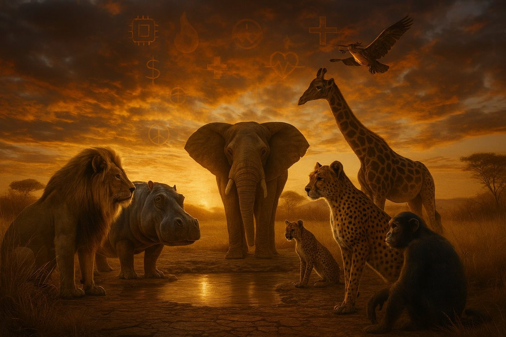

Where the ancient animals still remember the way to water
"Abundance is found by taking turns.
But the Takers no longer remembered the order.
They drank first. And longest. And last."
Select the animal that resonates most deeply
This game tracks not only what you know — but how you respond when the world becomes uncertain. Your chosen identity will be compared against your revealed behavior under stress.